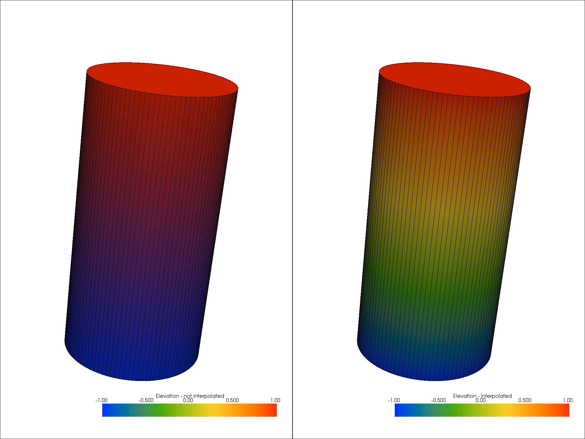
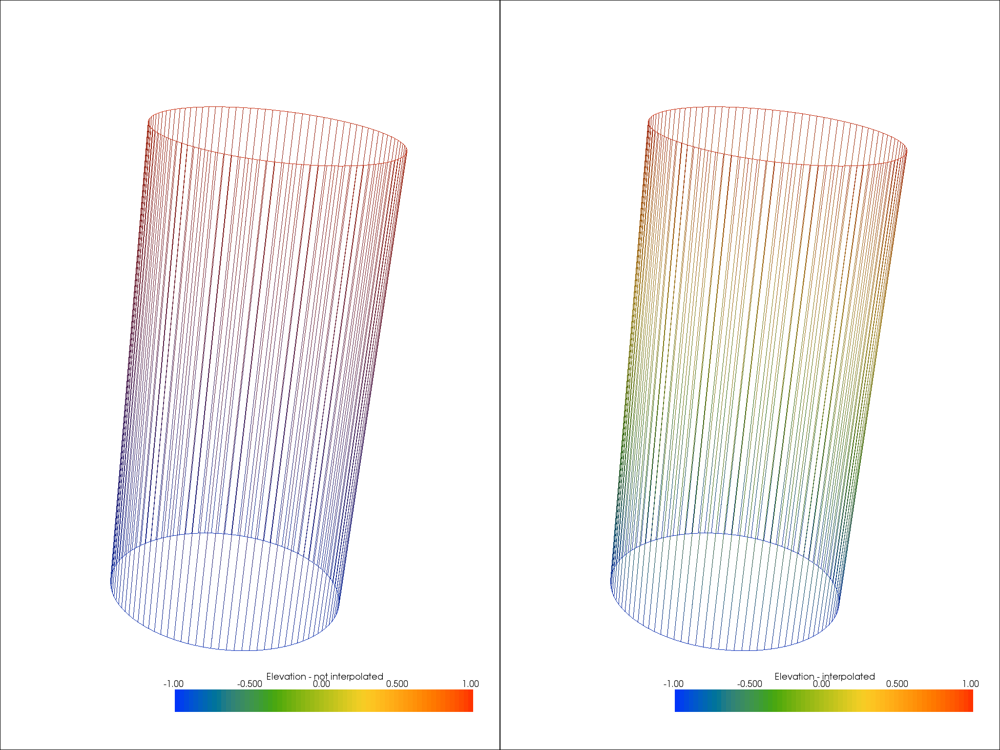
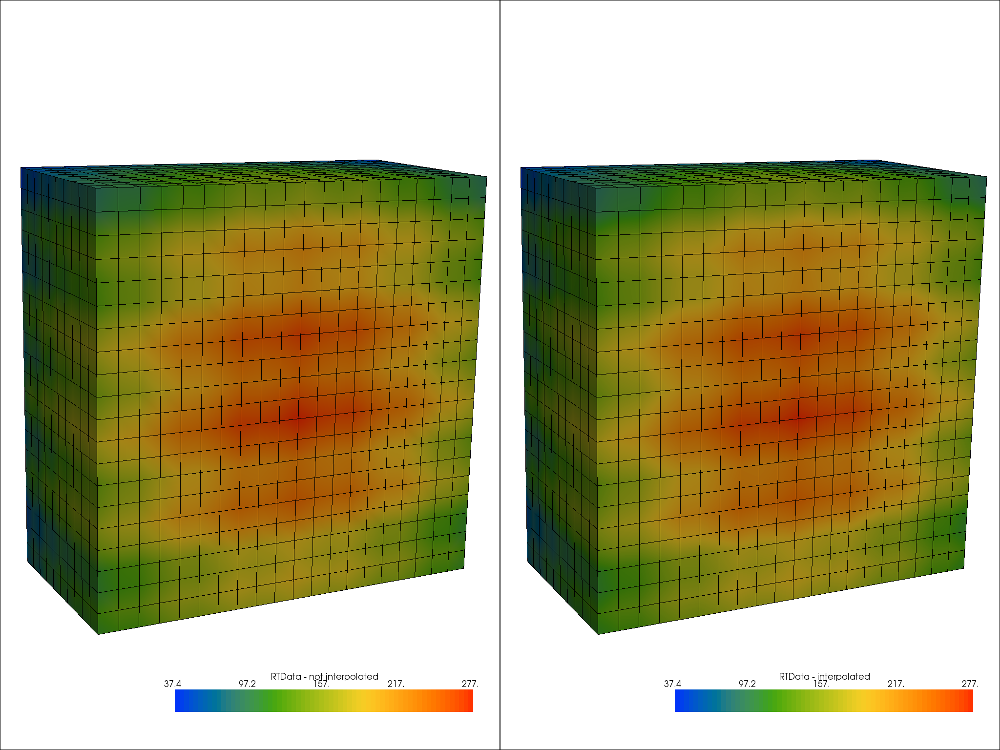
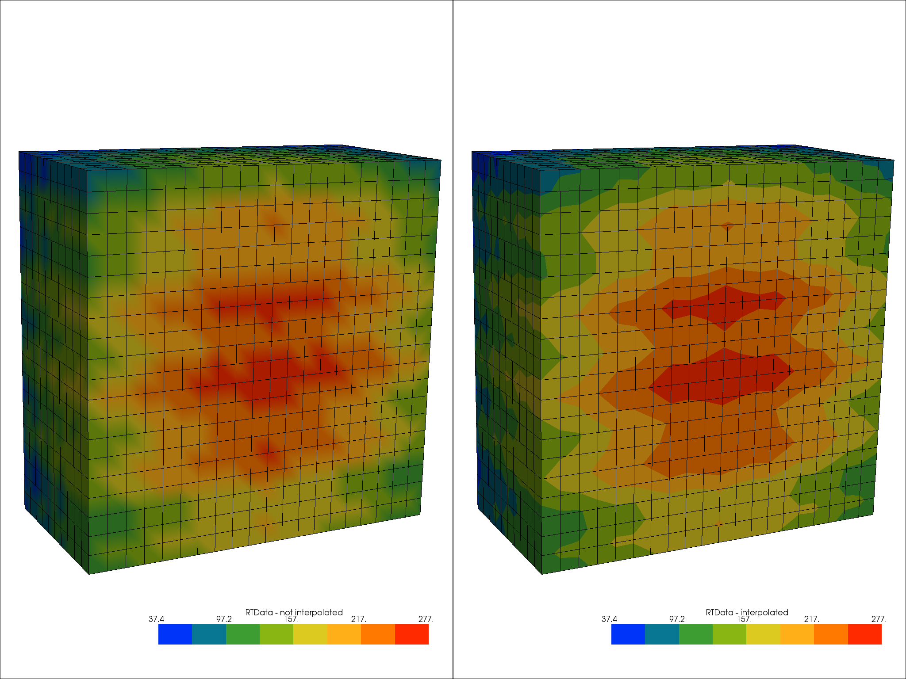

Note
Click here to download the full example code
Interpolate Before Mapping¶
The add_mesh function has an interpolate_before_map argument - this
affects the way scalar data is visualized with colors.
The effect can of this can vary depending on the dataset’s topology and the
chosen colormap.
This example serves to demo the difference and why we’ve chosen to enable this by default.
For more details, please see this blog post
# sphinx_gallery_thumbnail_number = 4
import pyvista as pv
Meshes are colored by the data on their nodes or cells - when coloring a mesh
by data on its nodes, the values must be interpolated across the faces of
cells. The process by which those scalars are interpolated is critical.
If the interpolate_before_map is left off, the color mapping occurs at
polygon points and colors are interpolated, which is generally less accurate
whereas if the interpolate_before_map is on, then the scalars will be
interpolated across the topology of the dataset which is more accurate.
To summarize, when interpolate_before_map is off, the colors are
interpolated after rendering and when interpolate_before_map is on, the
scalars are interpolated across the mesh and those values are mapped to
colors.
So lets take a look at the difference:
# Load a cylider which has cells with a wide spread
cyl = pv.Cylinder(direction=(0,0,1), height=2).elevation()
# Common display argument to make sure all else is constant
dargs = dict(scalars='Elevation', cmap='rainbow', show_edges=True)
p = pv.Plotter(shape=(1,2))
p.add_mesh(cyl, interpolate_before_map=False,
stitle='Elevation - not interpolated', **dargs)
p.subplot(0,1)
p.add_mesh(cyl, interpolate_before_map=True,
stitle='Elevation - interpolated', **dargs)
p.link_views()
p.camera_position = [(-1.67, -5.10, 2.06),
(0.0, 0.0, 0.0),
(0.00, 0.37, 0.93)]
p.show()

Out:
[(-1.67, -5.1, 2.06),
(0.0, 0.0, 0.0),
(0.0, 0.36966744887673536, 0.9291641282577402)]
Shown in the figure above, when not interpolating the scalars before mapping, the colors (RGB values, not scalars) are interpolated between the vertices by the underlying graphics library (OpenGL), and the colors shown are not accurate.
The same interpolation effect occurs for wireframe visualization too:
# Common display argument to make sure all else is constant
dargs = dict(scalars='Elevation', cmap='rainbow', show_edges=True,
style='wireframe')
p = pv.Plotter(shape=(1,2))
p.add_mesh(cyl, interpolate_before_map=False,
stitle='Elevation - not interpolated', **dargs)
p.subplot(0,1)
p.add_mesh(cyl, interpolate_before_map=True,
stitle='Elevation - interpolated', **dargs)
p.link_views()
p.camera_position = [(-1.67, -5.10, 2.06),
(0.0, 0.0, 0.0),
(0.00, 0.37, 0.93)]
p.show()

Out:
[(-1.67, -5.1, 2.06),
(0.0, 0.0, 0.0),
(0.0, 0.36966744887673536, 0.9291641282577402)]
The cylider mesh above is a great example dataset for this as it has a wide spread between the vertices (points are only at the top and bottom of the cylinder) which means high surface are of the mesh has to be interpolated.
However, most meshes don’t have such a wide spread and the effects of
color interpolating are harder to notice. Let’s take a look at a wavelet
example and try to figure out how the interpolate_before_map option
affects its rendering.
wavelet = pv.Wavelet().clip('x')
# Common display argument to make sure all else is constant
dargs = dict(scalars='RTData', cmap='rainbow', show_edges=True)
p = pv.Plotter(shape=(1,2))
p.add_mesh(wavelet, interpolate_before_map=False,
stitle='RTData - not interpolated', **dargs)
p.subplot(0,1)
p.add_mesh(wavelet, interpolate_before_map=True,
stitle='RTData - interpolated', **dargs)
p.link_views()
p.camera_position = [(55., 16, 31),
(-5.0, 0.0, 0.0),
(-0.22, 0.97, -0.09)]
p.show()

Out:
[(55.0, 16.0, 31.0),
(-5.0, 0.0, 0.0),
(-0.22028655891110546, 0.971263464289874, -0.09011722864545223)]
This time is pretty difficult to notice the differences - they are there,
subtle, but present. The differences become more apperant when we decrease
the number of colors in colormap.
Let’s take a look at the differences when using eight discrete colors via
the n_colors argument:
dargs = dict(scalars='RTData', cmap='rainbow', show_edges=True, n_colors=8)
p = pv.Plotter(shape=(1,2))
p.add_mesh(wavelet, interpolate_before_map=False,
stitle='RTData - not interpolated', **dargs)
p.subplot(0,1)
p.add_mesh(wavelet, interpolate_before_map=True,
stitle='RTData - interpolated', **dargs)
p.link_views()
p.camera_position = [(55., 16, 31),
(-5.0, 0.0, 0.0),
(-0.22, 0.97, -0.09)]
p.show()

Out:
[(55.0, 16.0, 31.0),
(-5.0, 0.0, 0.0),
(-0.22028655891110546, 0.971263464289874, -0.09011722864545223)]
Left, interpolate_before_map OFF. Right, interpolate_before_map ON.
Now that is much more compelling! On the right, the contours of the scalar field are visible, but on the left, the contours are obscured due to the color interpolation by OpenGL. In both cases, the colors at the vertices are the same, the difference is how color is assigned between the vertices.
In our opinion, color interpolation is not a preferred default for scientific
visualization and is why we have chosen to set the interpolate_before_map
flag to True.
Total running time of the script: ( 0 minutes 14.263 seconds)